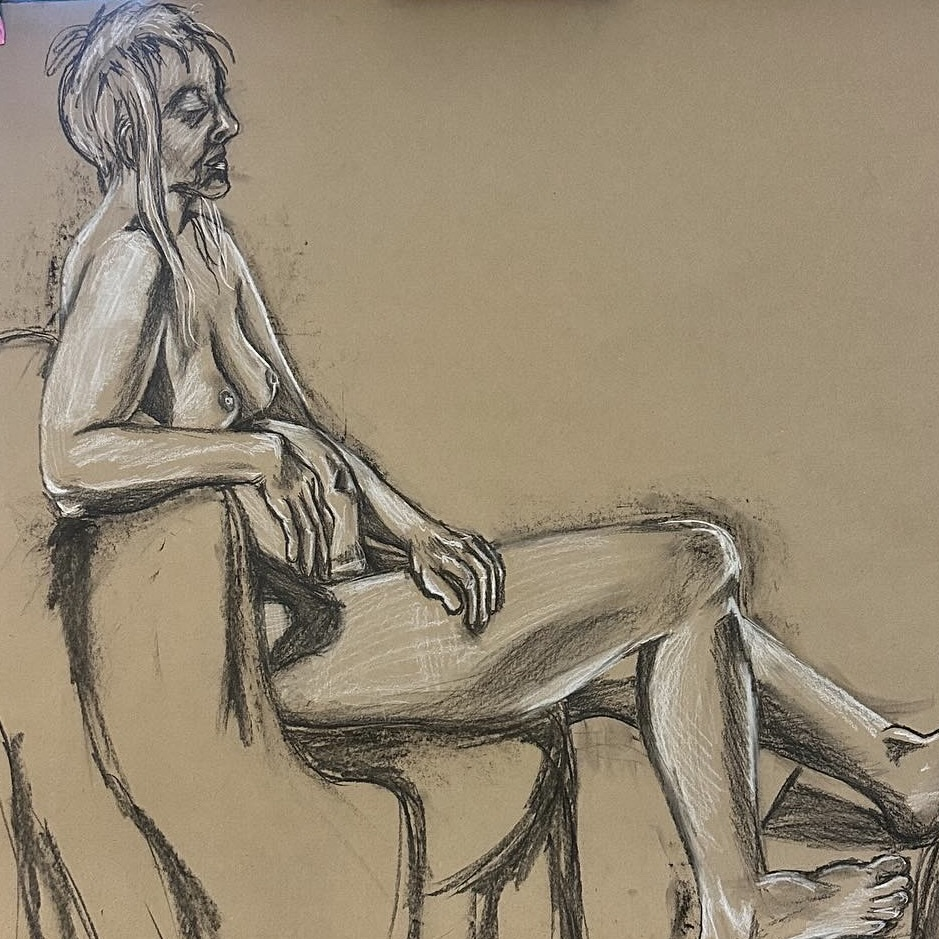
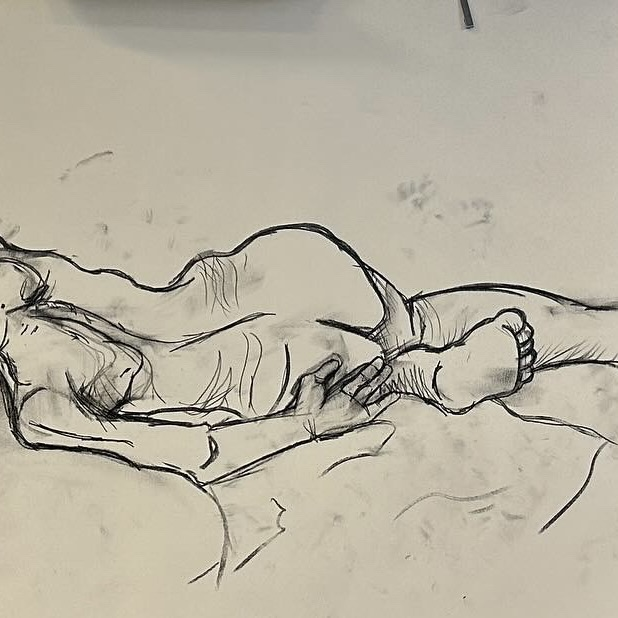
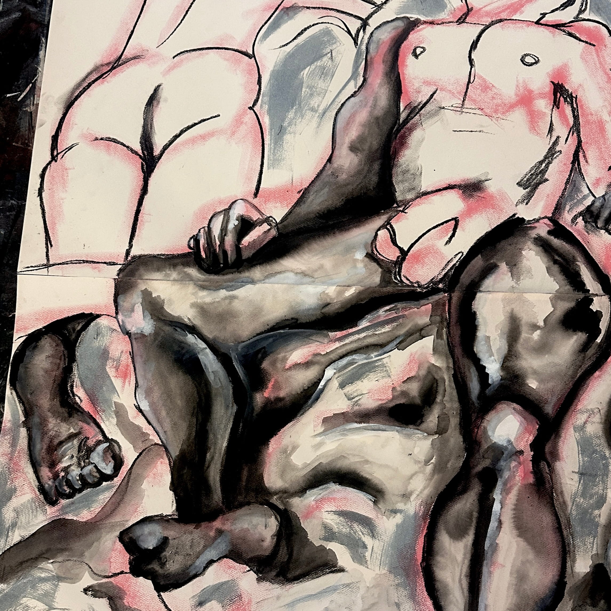
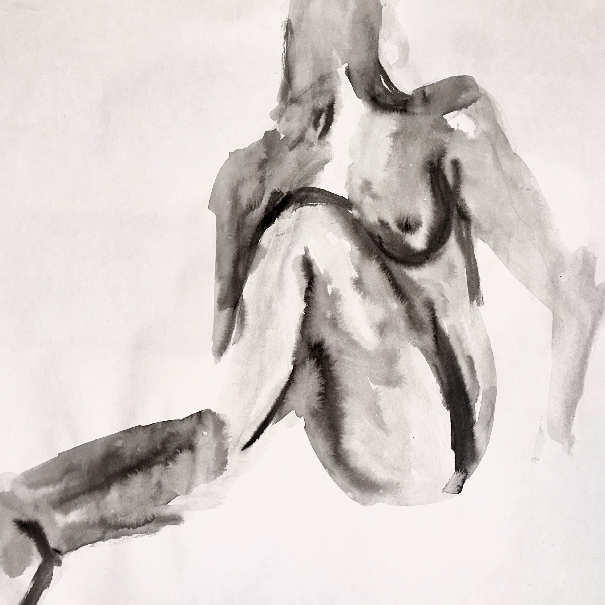
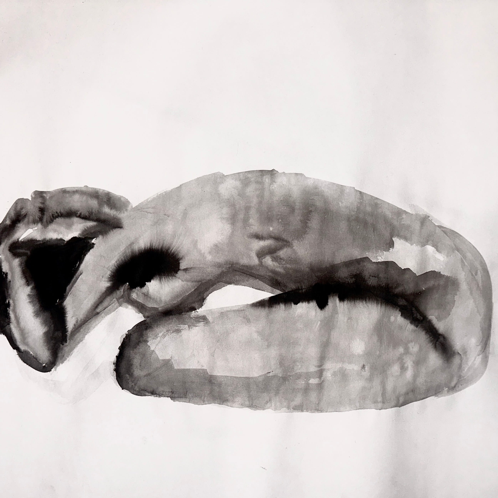
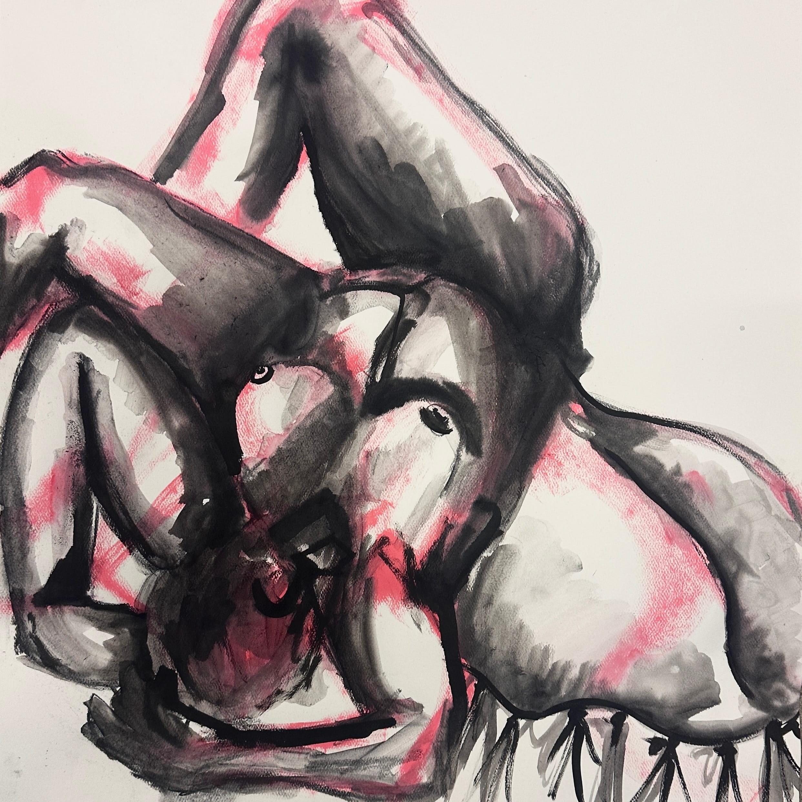
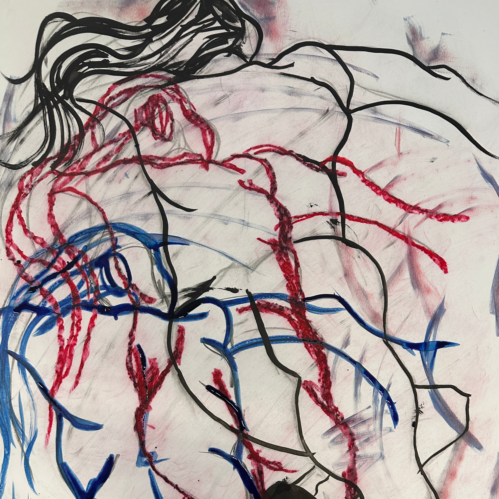
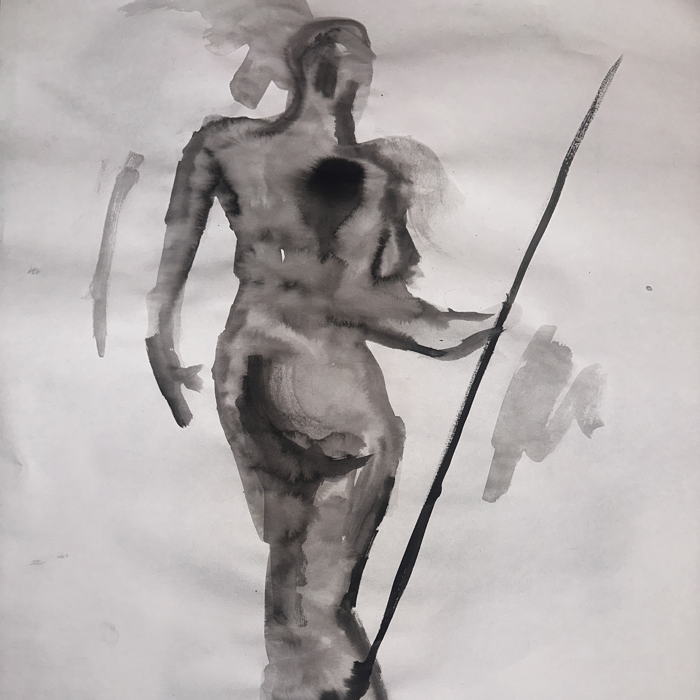

Black and white charcoal (3 hours)#2 graphite pencil (3 hours)

Willow vine charcoal (45 minutes)Black and white india ink (2 hours)Oil pastel (3 hours)

Willow vine charcoal, black, white and colored inks (4 hours)

Black india ink and water (1 minute)Oil pastels (1 hour)

Black india ink and water (5 minutes)

Black india ink and pink alcohol ink (20 min)Willow vine charcoal and pink alcohol ink (1 hour)

Black india ink, red pastel, blue ink, and charcoal (5 minutes) Black india ink and water (1 minute)Black india ink and blue ink (1 hour)

Black india ink and water (1 minute)